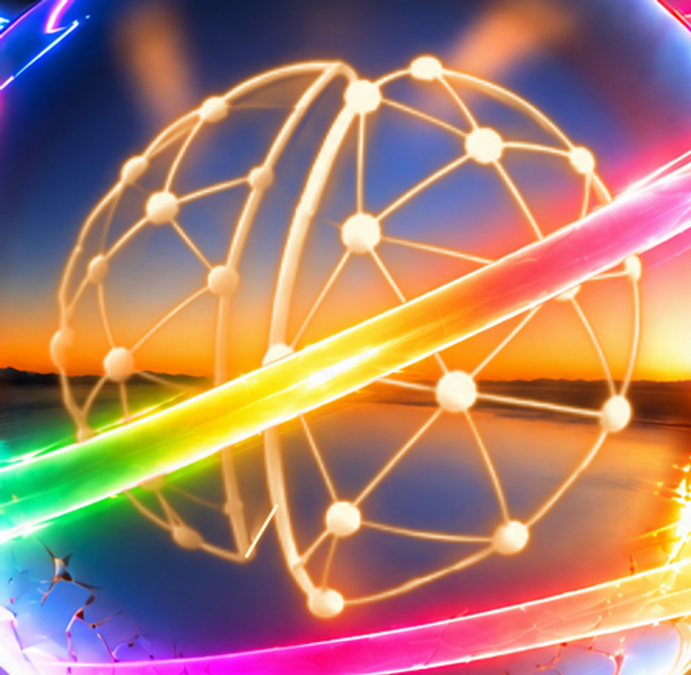
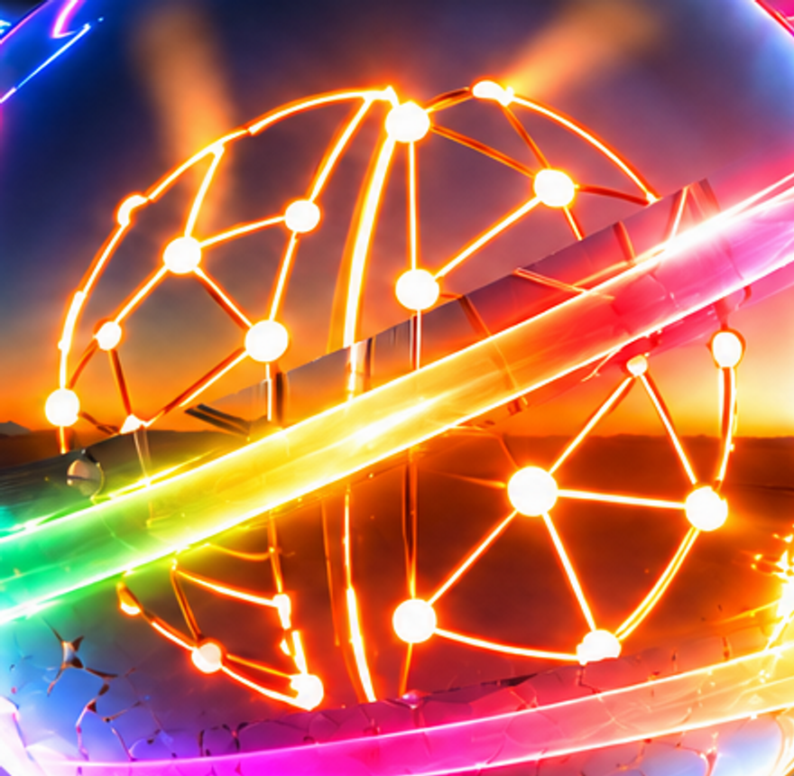
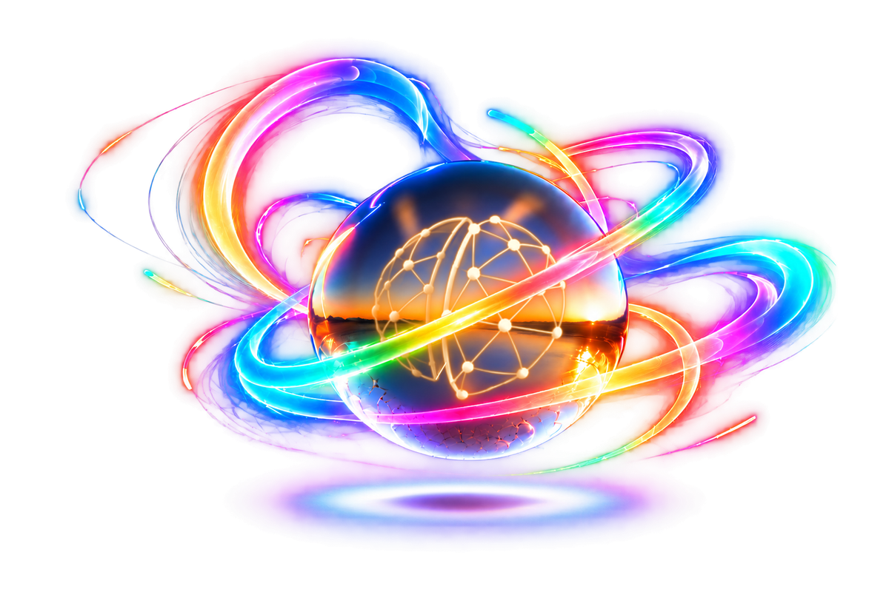
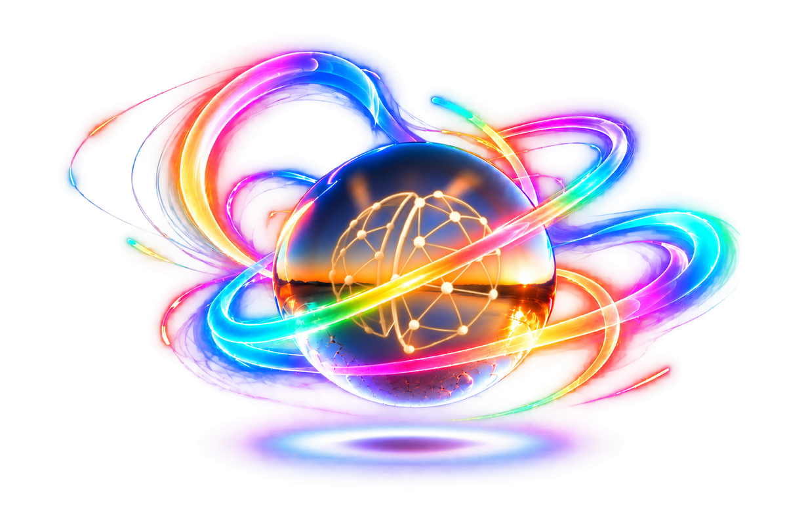

Transparent artwork · geometry repair 01
For review. Hero, social cards and Git remain paused.
Geometry comes directly from the approved two-half G08 mark. The local chrome face and ribbon crossing are rebuilt to remove the dark sash and clipped seam fragments.
Download review PNG · 3072×2048 RGBA

Rebuilt emblem and ribbon crossing

Compare prior version

Approved geometry reference
Full transparent artwork

